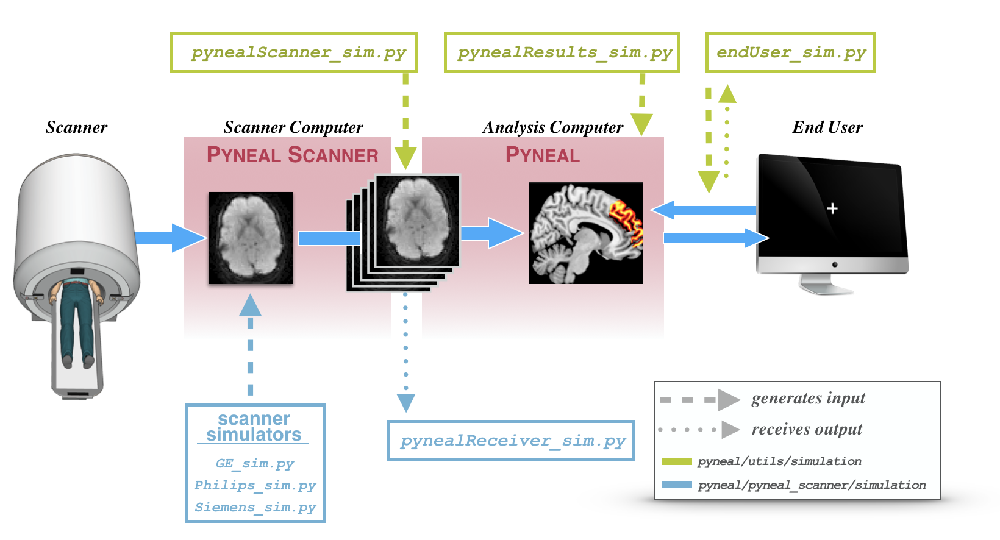
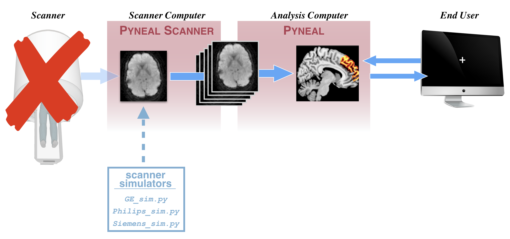
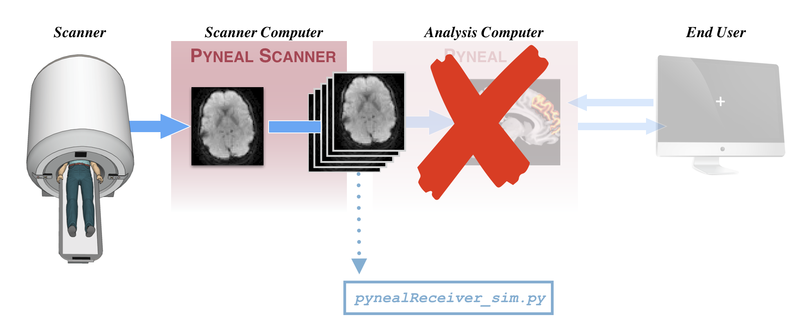
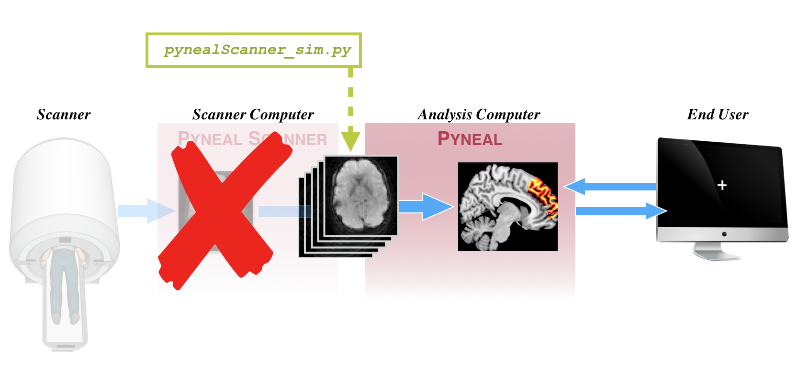
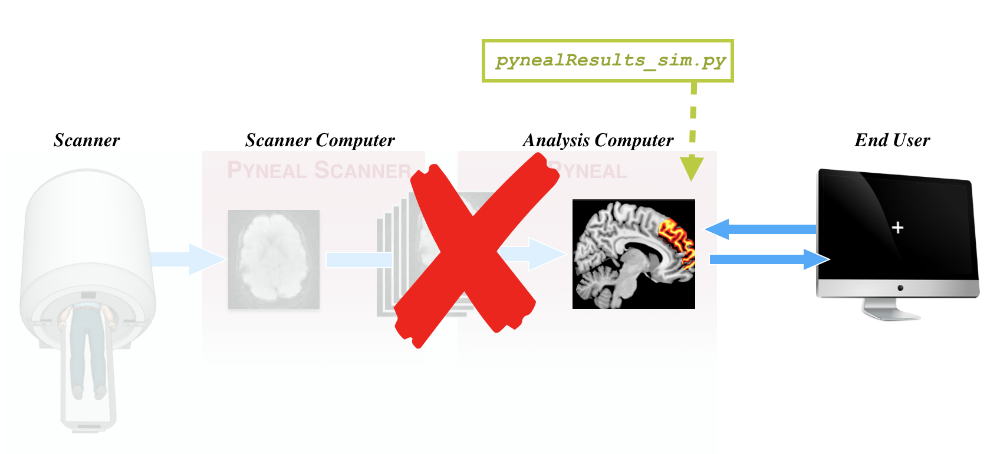
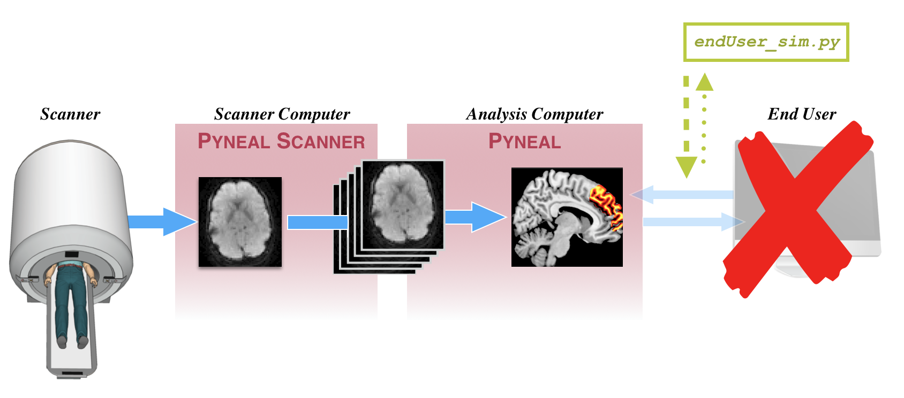

Simulations¶
Overview¶
In order to help with the initial setup, as well as test any analysis scripts and network communications later on, Pyneal includes a suite of simulation tools that mimic various inputs and outputs along the data flow path.
(To test your installation or analysis scripts using example data, download the Pyneal Tutorial Data, which contains sample data from GE, Philips, and Siemens environments)
These tools allow you to simulate Pyneal (or Pyneal Scanner) in a modular fashion without having to run the entire pipeline. If you are troubleshooting issues, these tools are immensely helpful.
Here is a diagram highlighting the various simulation tools, and where they enter the data flow pipeline.

During an actual real-time scan, data will flow through this diagram from left to right along the blue arrows.
Simulation tools are indicated using dashed or dotted vertical lines.
-
A dashed line indicates a simulation tool that generates input. In other words, these tools mimic real data as it exists at a particular stage of the pipeline
-
A dotted line indicates a simulation tool that receives output. In other words, these tools allow you to simulate the next stage of the pipeline
Both Pyneal Scanner and Pyneal have their own set of simulation tools.
-
Pyneal Scanner simulation tools can be found in
pyneal/pyneal_scanner/simulationand are shown in light blue below the real data pipeline in the schematic. See below for more details -
Pyneal simulation tools can be found in
pyneal/utils/simulationand are shown in green above the real data pipeline in the schematic. See below for more details
Pyneal Scanner Simulation Tools¶
The Pyneal Scanner simulation tools can be found in pyneal/pyneal_scanner/simulation
- Scanner Simulators: Set of simulation scripts to mimic the behavior of real scanners with real data.
- pynealReceiver_sim.py: simulates the behavior of Pyneal (i.e. accepts incoming 3D volumes from Pyneal Scanner)
Scanner Simulators¶
Use Case: Testing Pyneal Scanner (and anything else downstream) with real data.

This will simulate the appearance of raw data coming off of the scanner. This works by pointing the simulator to a folder containing real scanner data. The simulator will copy the real data to a new directory in a way that mimics the behavior of a real scan, allowing you to test Pyneal Scanner and anything else downstream.
The format of the raw data will vary according to different scanner environments/manufacturers. Accordingly, there are multiple scripts that will simulate different scanner formats:
GE¶
location: pyneal/pyneal_scanner/simulation/scannerSimulators/GE_sim.py
usage: python GE_sim.py inputDir [--outputDir] [--TR]
input args:
- inputDir: path to directory containing raw slice dicom images.
- -o outputDir: path to directory where slices will be copied to [default: create new directory named
s9999in the parent directory of the inputDir] - -t/--TR TR: set the TR in ms [default: 1000]
In order to run this script, you must have a local directory that contains raw slice dicom files from an actual scan. If you want to fully mimic the data directory structure of GE scanners, you can create a local directory path that follows the pattern [baseDir]/p##/e##/s## where the slice images are stored in a directory named like s###, which is nested two levels deep (p###/e###) from the [basedir].
This script will copy all of the slices from the inputDir and copy them to the outputDir at a rate that is set by the TR.
After the script has completed, the outputDir will be deleted.
Philips¶
location: pyneal/pyneal_scanner/simulation/scannerSimulators/Philips_sim.py
usage: python Philips_sim.py inputDir [--outputDir] [--TR]
input args:
- inputDir: path to directory containing raw slice dicom images.
- -o outputDir: path to directory where slices will be copied to [default: create new directory named
9999in the parent directory of the inputDir] - -t/--TR TR: set the TR in ms [default: 1000]
Philips scanners use XTC (eXTernal Control) to output reconstructed volumes to a directory during a scan. The files are written to a designated directory (e.g. XTC_Output), and within that directory, every series is assigned a new directory named sequentially starting with '0000'. For instance, volumes from the 3rd series will be stored like '.../XTC_Output/0002/'. This script will simulate the creation of a new series directory, and copy in PAR/REC files.
You must specify a local path to the inputDir. That is, the directory that already
contains a set of reconstructed PAR/REC files for a series (referred to below as seriesDir).
[OPTIONAL]: You can specify the full path to an output directory where the PAR/REC files
will be copied to. If you don't specify an output directory, this tool will default
to creating a new seriesDir, named '9999' saved in the parent directory of the seriesDir.
python Philips_sim.py /Path/To/My/Existing/Series/0000 --outputDir /Where/I/Want/New/Slice/Data/To/appear
if you did not specify an outputDir, new PAR/RECs would be copied to:
/Path/To/My/Existing/Series/9999
[OPTIONAL]: You can specify the TR at which new PAR/REC data is copied. Default is 1000ms.
python Philips_sim.py /Path/To/My/Existing/Series/0000 --TR 2000
Siemens¶
location: pyneal/pyneal_scanner/simulation/scannerSimulators/Siemens_sim.py
usage: python Siemens_sim.py inputDir seriesNum [--newSeriesNum] [--TR]
input args:
- inputDir: path to directory containing raw slice dicom images.
- seriesNum: series number of data that you want to simulate
- -n/--newSeriesNum: seriesNumber to assign to the new "simulated" data
- -t/--TR: set the TR in ms [default: 1000]
Siemens scanners stores reconstructed slices images by taking all of the slices for a single volume, and placing them side-by-side in a larger "mosaic" dicom image. A scan will produce one mosaic image per volume, and all mosaic images for all scans across a single session will be stored in the same directory. This script simulates the creation of that directory, and will pass in real mosaic images.
You must specify a local path to the inputDir as well as the series number of the series you want to simulate.
The input dir should be the directory that already contains a set of reconstructed mosaic images. A single session dir will hold all of the mosaic files for all of the scans for a given session. Mosaic files are named like:
[session#]_[series#]_[vol#].dcm
[OPTIONAL]: You can specify the series number that will be assigned to the "new" mosaic images. The default behavior is to assign a series number based on the next sequential number given the existing series. In the example below, the default would be to assign a newSeriesNum as '2', but we are overriding that to assign it as '19'
python Siemens_sim.py /Path/To/My/Existing/inputDir 1 --newSeriesNum 19
[OPTIONAL]: You can specify the TR at which new slice data is copied. Default is 1000ms, and represents the approximate amount of time it should take to copy over all of the slices for one volume of data.
python Siemens_sim.py /Path/To/My/Existing/inputDir 1 --TR 2000
pynealReceiver_sim.py¶
Use Case: When you want to test Pyneal Scanner without having to actually run Pyneal

This simulator will mimic the part of Pyneal that accepts incoming 3D volumes from Pyneal Scanner. This allows you to quickly test sending output with Pyneal Scanner, without having to fully run Pyneal (which entails a lot of extra overhead). You can (and should) run pynealReceiver_sim.py from the Scanner Computer.
location: pyneal/pyneal_scanner/simulation/pynealReceiver_sim.py
usage: python pynealReceiver_sim.py [--port] [--nVols]
input args:
- -p/--port: port number to listen on for incoming data [default: 5556]
- -n/--nVols: number of 3D volumes to expect from Pyneal Scanner [default: 60]
Make sure Pyneal Scanner is configured to use the same port number for pynealSocketPort (see Pyneal Scanner Setup)
After the scan is complete and all of the data has arrived, this will save the received 4D volume as a nifti image at pyneal/pyneal_scanner/simulation/receivedImg.nii.gz
Pyneal Simulation Tools¶
The Pyneal simulation tools can be found in pyneal/utils/simulation
- pynealScanner_sim.py: simulate the behavior of Pyneal Scanner (i.e. sends 3D vols to Pyneal)
- pynealResults_sim.py: simulate the results server of Pyneal (i.e. launches a server that stores fake results that can receive and respond to messages from the End User)
- endUser_sim.py: simulate the behavior of an End User (i.e. sends request to Pyneal for results from a specific volume, then waits for response)
pynealScanner_sim.py¶
Use Case: When you want to test Pyneal without having to actually run Pyneal Scanner

location: pyneal/utils/simulation/pynealScanner_sim.py
usage: python pynealScanner_sim.py [--filePath] [--random] [--dims] [--TR] [--sockethost] [--socketport]
input args:
- -f/--filePath: path to 4D nifti image that you want to use as the "scan" data
- -r/--random: flag to generate random data instead of using a pre-existing nifti image
- -d/--dims: desired dimensions of randomly generated dataset [default: 64 64 18 60]
- -t/--TR: set the TR in ms [default: 1000]
- -sh/--sockethost: IP address Pyneal host [default: 127.0.0.1]
- -sp/--socketport: port number to send 3D volumes over to Pyneal [default: 5555]
This tool will simulate the behavior of Pyneal Scanner. During a real scan, pynealScanner will send data to pyneal over a socket connection. Each tranmission comes in 2 phases: first a json header with metadata about the volume, then the volume itself. This tool will send data in that same format, using either a pre-existing 4D nifti image, or randomly generated data.
You can either supply real 4D image data:
python pynealScanner_sim.py --filePath /path/to/my/data.nii.gz
or use the tool to generate a dataset of random values
python pynealScanner_sim.py --random --dims 64 64 32 100
[OPTIONAL]: You can specify the TR at which 3D vols are sent to Pyneal. Default is 1000ms.
python pynealScanner_sim.py --filePath /path/to/my/data.nii.gz --TR 2000
[OPTIONAL]: You can set the socketHost and socketPort used for communication with Pyneal. Default host is 127.0.0.1, which allows you to run this tool alongside Pyneal on the same computer. Default socket port number is 5555. You must make sure that Pyneal is configured to be listening for incoming data on this port number (see Pyneal Set Up)
pynealResults_sim.py¶
Use Case: When you want to test an End User without having to actually run Pyneal (or anything else further upstream)

location: pyneal/utils/simulation/pynealResults_sim.py
usage: python pynealResults_sim.py [--TR] [--sockethost] [--socketport] [--keepAlive]
input args:
- -t/--TR: set the TR in ms [default: 1000]
- -sh/--sockethost: IP address Pyneal host [default: 127.0.0.1]
- -sp/--socketport: port number to send 3D volumes over to Pyneal [default: 5556]
- --keepAlive: True/False flag for whether to keep the simulated server alive and listening even once all of the made up data is added to it (see below for more details). Useful for debugging/testing. [default: False]
This tool will launch a server that listen in for requests for results from a remote End User (e.g. a task presentation machine). This tools behaves exactly the same way as the results server component of Pyneal, allowing you to test the End User behavior.
In this case the results that are returned are from a made up dataset generated each time the tool is called. There are 500 volumes in the generated dataset, and each volume has an associated "Average" result that is a random value drawn from a normal distribution (mean: 2400, stdDev: 15). Results for each volume will be available on the simulated results server at a rate set by the TR. For instance, with a 1000ms TR, it will take 500s for all of the results to appear.
While this simulated results server is running, it will listen for requests from an End User. With each request that appears, it will check to see if the result from the requested volume has appeared yet. If it has, it will send back a message that looks something like:
{foundResults: True, average: #####}
If not, the response message will simply be:
{foundResults: False}
For more information on formatting requests and interpretting responses, see requesting results)
endUser_sim.py¶
Use Case: When you want to test sending requests to Pyneal without having to actually run a real End User

location: pyneal/utils/simulation/endUser_sim.py
usage: python endUser_sim.py [-sh/--socketHost] [-sp/--socketPort] [volIdx]
input args:
- -sh/--sockethost: IP address Pyneal host [default: '127.0.0.1']
- -sp/--socketport: port number to send 3D volumes over to Pyneal [default: 5556]
- volIdx: the index of the volume you'd like to request results from [default: 0000]. Note: volume indices are 0-based
This tool will simulate and demo how an End User may request results from Pyneal during a real-time scan.
In a neurofeedback context, for example, the end-user may be the software that is controlling the experimental task. In this case, anytime the task wants to present feedback to the participant, it must request the output of the real-time analysis for a specific set of timepoints (or volumes).
This is an example of how requests should be formatted and sent to Pyneal. Requests are made on a per-volume basis, and each request should take the form of a 4-character string representing the desired volume index (using a 0-based index). For example, to request the first volume in the series, the string would be '0000'; to request the 25th volume in the series the string would be '0024', and so on...
For more information on formatting requests and interpretting responses, see requesting results and parsing responses